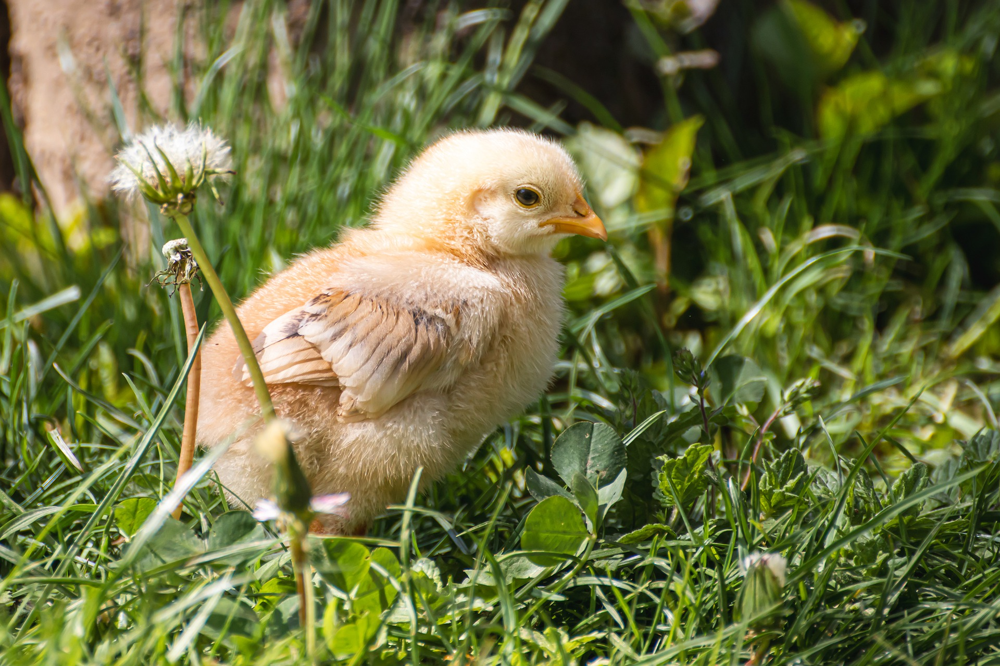

Le poussin est un jeune oiseau qui sort de l'œuf. Il est souvent couvert de duvet doux et moelleux et a une petite tête ronde et des yeux grands et sombres. Les poussins sont fragiles et ont besoin de soins particuliers, notamment en matière de température et d'alimentation. Ils grandissent rapidement et se transforment en oiseaux adultes en quelques semaines ou quelques mois, selon l'espèce.
en savoir plus 